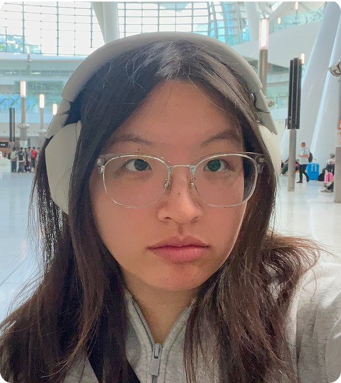
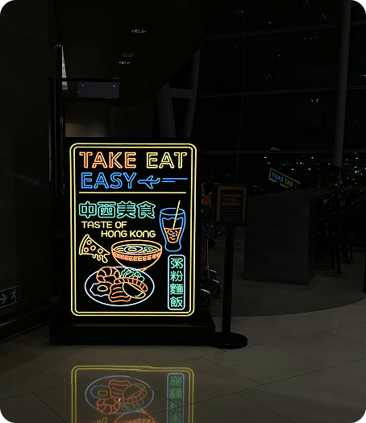
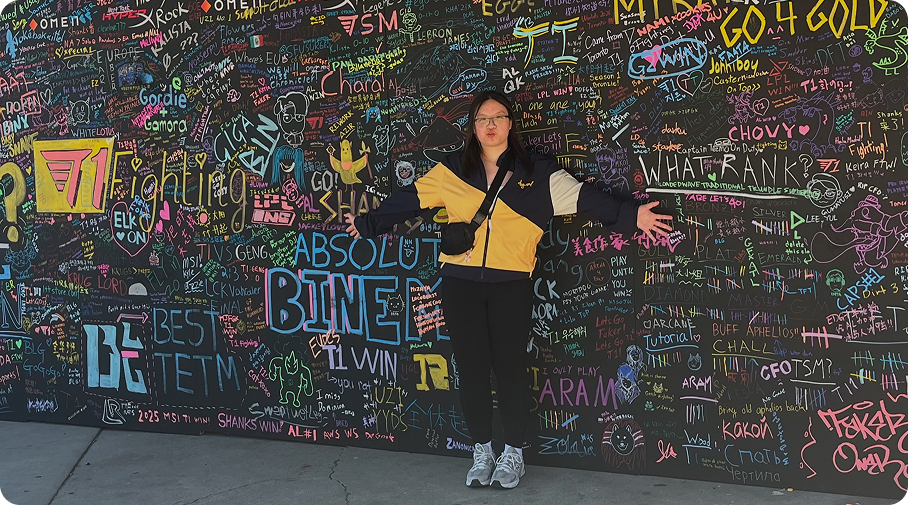
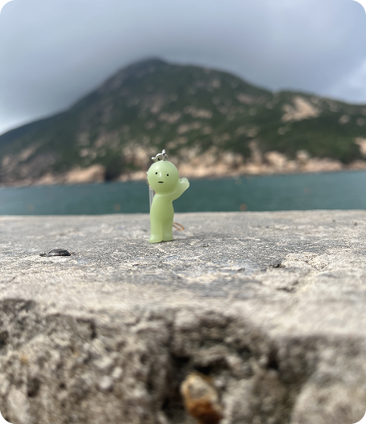
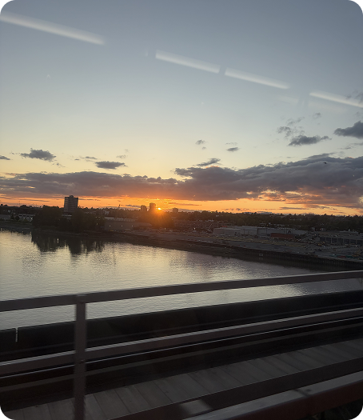
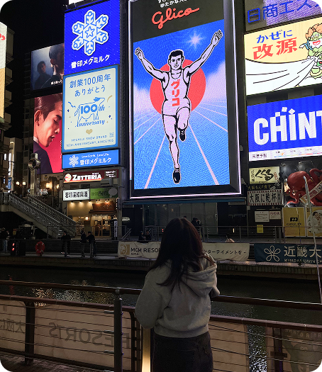

About Me
Hi There! It's Irina Ng
I'm a fourth-year student at Simon Fraser University studying Interactive Arts and Technology.
I have a passion for how things work and how people interact in their day-to-day lives for convenience and believe that is the core of UX/UI design. As my "organized mess" personality leads my creativity, helping me design spaces that feel personal, functional, and meaningful for others. The scope of the work I do in projects is highly rewarding and visual which definitely helps my motivation of doing great work.
You can catch me playing a late night game of League of Legends, or binging Netflix.
Insider Photos
My Snapshots




